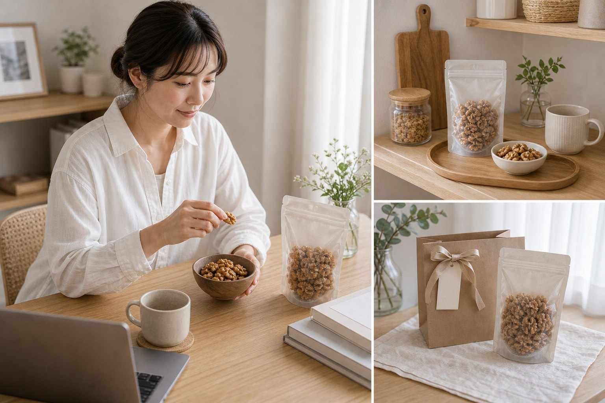

Small Friction
きっかけは、いつも“午後の間食”。
仕事中や家事の合間、少し何か食べたい。でも甘いお菓子ばかりだと罪悪感が残るし、見た目も雑に置くと気分が上がりません。
After
低糖質ナッツギフトがあるだけで、その一角が『整って見える』。
デスクやキッチンに置く間食が整うと、午後の小腹対策も雑に見えません。甘さに寄りすぎない選択肢が、日常のリズムを支えます。
Why it fits
この低糖質ナッツが、暮らしに効く3つの理由。
-
置きやすい
デスクやキッチンに置きやすいヘルシー寄りの間食
-
甘さに寄りすぎない
甘いものに偏らず、小腹満たしとして選びやすい
-
手土産にも使える
日常用にも、気を使わせない手土産にも使いやすい

Rakuten Check
価格・在庫は、楽天で要確認。
価格、レビュー、配送条件、在庫はショップ側で変わります。購入前に楽天の商品ページで最新情報を確認してください。
価格
¥2,275 / 楽天で要確認
レビュー
5.0 / 13件
ショップ
神戸のおまめさん みの屋直販店
確認先
楽天市場
Scene
こんな場面で、ちゃんと使える。
使うシーン
- 在宅ワーク中の午後の小腹対策
- 甘い差し入れが続いた後のリセット気分
- 健康を気にする友人への軽いギフト
印象の残り方
間食まで暮らしに合うものを選んでいると、健康的で落ち着いた印象になります。無理な節制ではなく、日常の選び方が整っている感じがします。
Product Images
写真で質感を確認する。


Before you buy
迷いやすいところだけ、先に確認。
ダイエット食品ですか？
特定の効果をうたうものではなく、甘いお菓子以外の間食候補として見るのが自然です。
ギフト感はありますか？
相手の好みを選びすぎない食品系ギフトとして、軽く渡しやすいカテゴリです。
Final Check
気になったら、在庫があるうちに。
デスクやおやつ時間に置きやすい、見た目も整ったヘルシースナック。 価格・レビュー・在庫は楽天で要確認です。気になった今、楽天の最新情報だけ確認しておくのがおすすめです。
楽天で詳細を見る